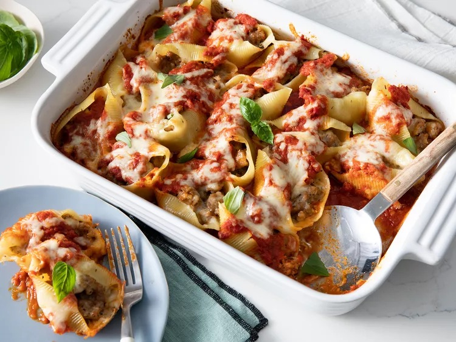

Lasagne

Lasagne is a dish indigenous to Italy, but enjoyed all over the globe.
Italian immigrants to America have further developed the dish with the addition of a beschmel sauce instead of ricotta
An ingredients list for this meal is shown below
- Mince meat
- Tin of Tomatoes
- Lasgne Pasta sheets
Steps
- Put 125g of butter into a pot and melt it
- Once melted, place 63g of flour into the pot and stir. It is important to keep stirring or else it will burn
- Cook for 3 minutes and then add in 4 cups of milk slowly, careful not to create clumps
- Cook for 15 minutes, and then add salt, pepper, freshly ground nutmeg and parmessan cheese
- Place into a bowl with clingfilm on top. Press the clingfilm down to the sauce, and place in the fridge for 30 minutes to cool